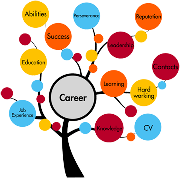

Our Story
our career guidance for students
our real motto for the students is to provide them an easy path on the part of career and give inspiration to students to make there career bright.

- Personalized career guidance
- combine techy with intelligence
- Finest Developed Resources